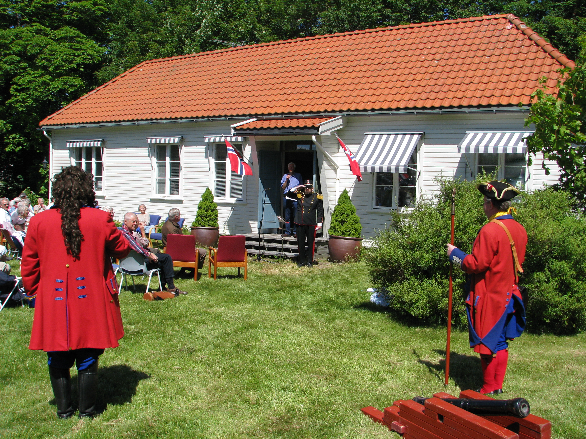

Tekst: Thor Einar Hanisch, Universitetet i Agder, Seniorsenteret
Først publisert i Agder Vitenskapsakademis årbok 2015
En gang hadde General Oscar Wergeland et hus. Det lå på Bellevue og var et herlig tømret hus, hans elskede private sfære, hvorfra han omgitt av sine blomster kunne speide utover byen og fjorden og ivareta byens forsvar og tarv. Dessverre finnes dette huset ikke lenger, det ble revet etter hans død, falt for utviklingens industrielle krav. Men tapet måtte kompenseres. Det så Navnekomiteen for Campus Kristiansand Gimlemoen, da vi under daværende rektor for Høgskolen i Agder, HiA, professor Ernst Håkon Jahr, foreslo at hus måtte det bli, så vel for Henrik, Oscar og Camilla. Det må vel være enestående for noe europeisk universitet.at en så stor ære er vist tre søsken. Henrik, vår store nasjonalskald fikk Høyblokken, som seg hør og bør. Camilla, fremragende kvinnelig pionerforfatter, fikk fakultet for humaniora. Men hva fikk Oscar, Generalen som av dem alle gjorde desidert mest for hjembyen Kristiansand?
Han fikk militærbrakken ved Vestre port, selve hovedinngangen, vaktsomt voktet gjennom den lange militærtiden, av landsdelens hovedleir Gimlemoen. Hvorfor ikke Gimlemoen 10, der han, som flere andre regimentssjefer, som for eksempel min morfar, og min fetters, akademikollega Knut Dahl-Jørgensens farfar, oberst Einar Jørgensen, faktisk hadde sitt regimentsjefskontor? Jo, det var fordi HiA på det tidspunktet ikke disponerte denne gamle, ærverdige bygningen. Generalen måtte midlertidig være «i eksil» i bygg 51 til Gimlemoen 10 ble frigitt for universitetsbruk, og universitets-direktør Tor A Aagedal 25. juni 2012 offisielt kunne navnsette den som General Oscar Wergelands Hus. Dagen ble feiret med kanonsalutt, tale av byens tidligere kulturdirektør Edvard Brøvig, med general Oscar selv til stede i skuespilleren Knut Østrådals skikkelse, og selvsagt med hageselskap i det grønne på husets flotte plen, som strekker seg fra huset forbi den store hersegraven fra folkevandringstiden iflg. fylkeskonservator Stylegar, og orienteringstavlen, forbi den lille gravrøysen fram til Militærmonumentet «Utdanning gjennom 1000 år». Monumentet, som Forsvarshistorisk gruppe under Agderkultur, først ledet av Generalmajor Litleskare, og ved hans død fra HiA ved undertegnede, etablerte, og HiA-rektor Jahr innviet sammen med byens siste general, Odd Helge Olsen.
Viktig var det da at tidligere nestkommanderende ved Distriktskommando Sørlandet, obtl. Børre Reidar Gundersen, redegjorde for Husets historie. Han er, sammen med flere andre forsvarshistorisk meriterte regionale sjefer, som flaggkommandør Per Kjell Kristiansen, oberstløytnant Karl Hauschild Fredriksen og kommandørkaptein Arvid Svein Marthinussen, blant dem som har benyttet, og for de flestes vedkommende, fortsatt har et nært forhold til huset. De kan observeres ved å google Agderkultur.uia.no og klikke på baunen med skjoldet, sverdet og budstikken. Oberstløytnant Gundersen uttalte blant annet: «La meg med en gang innrømme at jeg faktisk ikke vet sikkert hvor gammel denne bygningen er. Den sto på Grimsmoen hvor den ble først brukt av de gevorbne avdelingene, d.e. de vervede, siden også av de nasjonale. Grimsmoen var i bruk fra ca. 1792, men så gammel er nok ikke denne bygningen».
Da bøndene trengte mer beite på Grimsmoen, måtte infanteristene til Christianssandske brigade se seg om etter en ny ekserserplass, og under Generalmajor Johan Georg Boll Gram ble Gimlemoen valgt. Det var vel ikke så unaturlig, Oddernesmoen og eksersis på kirkebakken har jo tilknytning til området. Da leiekontrakten var undertegnet 29. oktober 1863 (600 mål), fantes det ingen permanente bygg her, men det skulle snart bli annerledes. Denne bygningen og flere andre ble flyttet fra forskjellige ekserserplasser vinteren/våren 1864 til Gimlemoen. Leiren skulle være klar til 5. mai. Det var nåværende østre del som var Gimlemoen leir. Utleier var Bernt Holm. Senere fra 1914 da Gimle Gård var nær konkurs, overtok det nystartede selskapet Gimleby A/S ved Endre Refsnes utleieforholdet og fortsatte å forvalte bygg, messer, skytefelt og annet. Dette utleieforholdet gjaldt frem til 1954, da staten ved forsvaret via en rettsak overtok området.
Den hektiske byggeri-virksomheten skyldtes at 1. og 2. Halvbrigade under henholdsvis oberstløytnantene A Gude og JFO Wergeland skulle øves fra 20. juli 1864. Halvbrigade- ordningen var en ny krigsorganisasjon. Men før dette skulle rekruttskolene til de to Halvbrigadene avvikles 9. mai til 15. juli. Jeg kan jo nevne at rekruttskolen til 2. Halvbrigade som oblt. Wergeland ledet, hadde 556 rekrutter, 6 offiserer, 40 underoffiserer og 14 spill, vesentlig fra Telemark, Larvik og Numedalen. Oblt. Gude hadde det vi nå ville kalle sørlendinger og rogalendinger. Under halvbrigadeøvelsene, som omfattet både rekrutter og innkalte, må vi regne med at det var vel et par tusen mann samlet her.
Joseph Frantz Oscar Wergeland ble oberst og sjef for Christianssandske Brigade og kommandant 2. mai 1868. Han fikk da naturligvis mer med Gimlemoen og denne bygningen å gjøre. Blant annet ble bygningen vesentlig påbygget i 1870 og fikk omtrent den form den har i dag. På noen nyere foto ser en at det ble bygget en slags veranda utenfor spisedelen. Ellers så har vi jo Hersegraven, populært kalt «Pjolterhaugen» hvor Brigademusikken musiserte og offiserer gjerne avsluttet arbeidsukens virksomhet med en pjolter. Det var forresten under Verdenskrigen at brigadene, fra 1916, ble døpt om til divisjoner, og det er derfor vi snakker om Divisjonsmusikken.
Oscar Wergeland ble Generalmajor 28. januar 1880 og fortsatte som brigadesjef og kommandant til 31. desember 1893. I lange perioder i senere år var Gimlemoen 10 i bruk som Offisersmesse når det var øvelser på Gimlemoen, for eksempel fram til 1940. Da Befalsskolen for Infanteriet kom til Gimlemoen 12. august 1947, ble bygningen igjen tatt i bruk som sjefsbolig. Før Krigsskolen Gimlemoen ble etablert i 1984, fikk bygningen en grundig renovering og ble ombygget til tre meget brukbare befalshybler. Siden, da Gimlemoen leir ble nedlagt i 1995, overtok Statsbygg». Så langt oberstløytnant Børre Reidar Gundersen.
Da vi innviet Gimlemoen 10 som General Oscar Wergelands Hus 25. juni 2012, var det naturlig å spørre Edvard Brøvig, mangeårig kulturdirektør i hjembyen Kristiansand, om å holde hovedtalen for dagen. Og siden, i Oscar Wergeland Året 2015, om å personifisere Generalen i hans uniform og gi til beste General Oscars tilbakeblikk på sitt liv og virke og på hjembyen da og nå. Først fra Edvard Brøvigs tale i 2012:
«Oscar Wergeland var den yngste av de tre berømte Wergelandsbarna. De ble alle født i Kristiansand, Henrik i 1808, Camilla Collett i 1813 og Oscar i 1815. Men etter at deres far, Nicolai Wergeland, hadde deltatt i Riksforsamlingen på Eidsvoll i 1814, ble han utnevnt til sogneprest i Eidsvoll i 1816, og familien flyttet dit. Dermed vokste barna opp på Eidsvoll, men familien glemte aldri Kristiansand, og tre av dem har fått sine statuer i fødebyen. Professor Francis Bull sa en gang at det var enestående i verdenssammenheng at tre søsken har fått sine statuer i samme by. Nå fikk de også tre hus oppkalt etter seg på Universitetet i Agder. Oscar Wergeland var den eneste av de tre søsken som vendte tilbake til Kristiansand. 19 år gammel begynte han i det militære, og i 1859 kom han tilbake til sin fødeby som kaptein og ble der. I 1868 ble han festningskommandant, og i 1880 ble han utnevnt til generalmajor. Han døde i 1895, 80 år gammel. Så det ble i Kristiansand han fikk utfolde sin fulle livskraft, og her satte han store spor etter seg, ikke minst her på Gimlemoen hvor Universitetet i Agder holder til i dag. Noen få år før han kom tilbake til Kristiansand, var Gimlemoen tatt i bruk som hovedekserserplass. Her fikk han kommandere, og her på Gimle Gård bodde hans gode venn, stamhusbesitter Christian Ditlev Adolf Arenfeldt, hvis sønn ble gift med Wergelands datter Sigrid.
Gimle og Oddernes er i dag omgitt av store og vakre trær, deriblant alleen langs Jægersbergveien som går her forbi. De fleste går tilbake til General Wergeland og hans soldater, som han brukte til å plante trær. Vi kan i det hele tatt ikke komme forbi treet når vi taler om Generalen. Treet, det gamle bibelske symbolet for vekst og utvikling som preger Kristiansands byvåpen fra 1642, sammen med Kristus-symbolet, løven og hellebarden, symbolet for lov og orden, begge hentet fra riksvåpenet, preger også Christianssands Byselskabs emblem, og treet preger Generalens eget stempel. Byselskabet var en institusjon som Generalen ledet, ja, på en måte, personifiserte og dominerte i en menneskealder. Det ble aldri ført protokoll eller skrevet referat. Generalen bestemte og fikk ting gjort. Han fikk plantet alleer ved byens innfartsveier og han anla parker. Wergelandsparken, sentralt i byen, hvor Gustav Vigelands statue av Henrik Wergeland ble satt opp i 1908, var anlagt av broren Oscar, lenge før. Han hadde latt sine soldater kjøre på jord og anlagt denne parken på et sted som nesten har vært betraktet som en sandørken, som man hadde prøvd å steinsette. En ekspert som har vurdert denne parken i dag, har uttalt: «En grunn til å beholde trærne er det rent helsemessige. De gir god levirkning, de filtrerer støv ut fra luften, er en god støydemper, og ikke minst forbruker de mye kulldioksyd. En velutviklet 100 år gammel bøk på 25 meters høyde - slike som vi har i Wergelandsparken - omsetter kulldioksydproduksjon fra 800 enfamiliehus pr. år. Denne bøken har en ytre bladoverflate på tilnærmet 1600 kvadratmeter, og gjennom bladmassen sirkulerer det ca 5000 kubikkmeter luft hver time. Dersom et slikt tre ble felt, måtte det 1600 nyplantede trær til for å få erstatning for det».
Dette gir oss litt perspektiv over general Wergelands gjerning. Så kan vi gå videre til Baneheia. Redaktør J. Arnold Jensen har kalt general Wergeland for mannen som kledde fjellet. Det var det han gjorde. Denne naturparken med spaserstier, trapper og tjern like ved bykjernen, besto før Wergelands tid av noen avgnagede, treløse knatter og noen sure myrsøkk. Og så Ravnedalen: Et mørkt, nærmest utilgjengelig strøk, fullt av torner og kratt, gjorde han til det som er blitt utropt til årets park i Norge. En gang Dronning Sonja ble spurt om hva hun forbant med Kristiansand, svarte hun «Ravnedalen». Den er et klenodium, kronen på General Wergelands verk, der Byselskabet nylig har frembrakt en ny scene.
Da byens ordfører i 1908, oberstløytnant E.A. Gundersen avduket Henrik Wergelands-statuen, brukte han det nå fredede Søskentreet på Jægersberg, (omtalt av banksjef Kåre Brøvig på UiA-portalen Agderkultur), som et bilde på de tre Wergelandsbarna. Treet har tre stammer, og Gundersen sa: «De er forskjellige, men av samme rot». Det passer bra at Søskentreet ligger bare noen steinkast fra generalens hus. Vi kan i dag si at Joseph Frantz Oscar Wergeland er kommet hjem til sine søsken Camilla og Henrik her på Universitetet i Agder. General Wergeland fikk, ved hjelp av sine soldater, i løpet av 30 år, plantet ut 150.000 trær. Han var streng, men respektert. Tusener fulgte ham til graven».
Tilføyelse: Det var E.A.Gundersen som tok initiativet til innsamlingsaksjonen for Oscar Wergelandstatuen i Ravnedalen, mens det ifølge Helge Refsnes var Gerhard von der Lippe, barnebarnet til biskop Jacob von der Lippe, som ledet innsamlingen for å få reist det store minnesmerket over en stående general. E. A. Gundersen holdt vigslingstalen. På kommunens vegne ble statuen mottatt av ordføreren, daværende kaptein Einar Jørgensen. Ordføreren forsikret at byen ville ta vel vare på monumentet og dekke utgiftene med å vedlikeholde det. Han håpet monumentet ville inspirere byens borgere til å gå i Oscar Wergelands fotspor og bli naturelskere som han var det, og ikke minst naturvernere.
Så utdrag av «General Oscars tale», på Gimlemoen, ved Edvard Brøvig 25. juni 2015: «Vær hilset Borgere udav Christianssand. Vær velkommen, hver kvinde og hver mand til dette hus der er oppkalt efter mig, ved Universitetet i Kristiansand. Jeg blev født her i Christianssand for 200 år siden, i 1815, året efter at min fader Nicolai Wergeland havde deltaget i Rigsforsamlingen på Eidsvold, der han var med på at vedtage vår Grundlov den 17. mai 1814. Min fader kempede for de revolutionere ideer fra den franske Revolution. Han hadde stor respekt for Karl Johan, «revolutionens sønn», der var i ferd med at blive svensk-norsk konge. Fader ledet svenskepartiet, og man mente at han var spion for Karl Johan på Eidsvold. Da jeg blev født, skal min fader have tatt kontakt med Karl Johan og spurt om han kunde oppkalde mig etter hans sønn Oscar. Jeg blev døbt Joseph Frantz Oscar, men det var Oscar jeg benyttede.
Men i 1816 skede en stor forandring. Vår fader bleve udnevnt til sogneprest til Eidsvold. Vi flyttede dit og vi voxede opp med hele Grundlovstraditionen. Bare tre av oss fikk fortsatt en viss konnektion med Christianssand, Henrik og Camilla på grund av sin diktning. Det var kun jeg der kom tilbage av oss fem børn, jeg blev her i 36 år og tog her mitt livs største tørn.
Som kommanderende offiser ble jeg svært opptatt med smått og stort. Det blev skyting, eksersis og sport, særlig vintersport. Men ikke minst blev det arbeid med jord, med spade og grev, såing og planting med mye strev for soldaterne og mig. På pletten tidlig og sent, og jeg blev ganske kjent.
I dag vil jeg takke ivrige bysborgere og Bybestyrelsen for at tre av oss fem Wergelandsbørn har fått statuer for vår indsats. Professor Francis Bull haver sagt det er enestående i verdenssammenheng: Tre søskende med statuer i en by. Jeg glæder meg over min statue i Ravnedalen, der Gustav Lærum, på grund av min barskhed og strenghed, haver placered mig min pisk i hånd. Ravnedalen, byens øyensten, det vakreste jeg skabte, udav et vildniss i udkanten av denne by. Det bidrog til at gjøre den vakker og ny. Jeg glæder meg også over Baneheien, fjellet som vi kledde, gangveie som vi spadde og parkerne vi anlagde, selv midt i centrum. Dertil kommer allétrærne som vi plantede ved innfarten til vår by. Min broder Henrik hadde noget av den samme evne som jeg. Vi vandrede omkring med frø i lommerne, frø som vi dryssede ud. Bare tenk på den pose med bøgekjerner som Henrik sendte herned sammen med et digt. Hør her på digtet:
«På gamle Oddernes voks opp, den ædle bøgesæd,
voks rank, voks høy inntil din Topp bliver ørnens ynglested.
Da skal hver stamme nyde agt, som være den en mand.
En kjempeskog skal stå på vakt på Lund ved Christianssand».
Lat oss nu se oss omkring her. Se på dagens kjempetrær på Oddernes. Se på alleerne til Kongsgård, Østerveien og den til Jægersberg her lige ved. Se så på vårt pregtige Gimle og på dagens universitetsområde, hvor jeg tidligere hadde kommandoen, ved siden av kommandoen på Festningen, i Retranchementet og på Grimsmoen, hvor dette mitt hus sto tidligere. På Gimle Gård huserede min gode venn stamhusbesidder Arenfeldt, hvis sønn blev min svigersønn da han giftede min datter Sigrid. Den gren av slekten overtog imidlertid Sæbygaard på Jylland, hvortil man i dag haver søverts forbindelse flere gange dagligen.
Takket være temming av elver og vandfall og oljen i Nordsøen haver vi i dag fått mange arbejdsplasse, og tenk Universitet, noget min fader kempede for på landsbasis med sin avhandling om norsk universitet i 1811.
Nu haver jeg siddet der oppe i Ravnedalen over 100 år og kikket ned og sett om I have bekommet jer vel og taget vare på det hele, og jeg vil fortsatt følge med. Tenk snart 100.000 indvånere i Christianssand. Og jeg vil sige:
Takk for at I tager vare på Gimlemoen og mitt hus, men også takk for at to av mine søsken haver fået sine æresminder. Og jeg siger: Tag vare på alle de trær vi plantede og tag vare på hele vårt skaberverk. Min kjære broder Henrik som skrev «Skabelsen, Mennesket og Messias», han skrev også det jeg vil kalle et panteistisk dikt. Lytt: «Ånd er ei i dens tanker som er så sjelearm at han ej tror det banker en puls i blomsters barm, hvis blade tale kunde, i sus fra tre til tre, akk hør de 1000 munde i susende allé». Hører I suset fra trærne? Lytt. Og tag vare på dem. Det ble sagt om mig at den som havde dårlig samvittighed fryktede mig. Jeg var nemlig svært nøie og påpasselig med min ridepiske. Da jeg gikk bort sa imidlertid pastor Tandberg: «Det fulgte grolykke med ham ti han havde megen kjærlighet, og det er ikke mange som har gitt byen Christianssand den kjærlighet han gav av sitt hjerte». Kjære venner: Dette gleder og utfordrer oss alle. Må vi lytte til Kjærlighetens stemme i vårt indre, i vår samvittighet og følge den! Takk for oppmerksomheten, og lykke til».
Så langt General Oscar Wergeland, personifisert og formidlet av byens meriterte kulturdirektør Edvard Brøvig, fra trappen på General Oscars Hus under 200 års jubileet 2015 for Generalens fødsel. Der salutt, som alltid av Christianssand Artillerie Compagnie, og ved fanfarer, marsjer og solosang og allsang, ved henholdsvis Harald Knudsen, Turid og Ivar Berglihn og Ragni, Kjersti, og Eirin Hanisch, og min opplesning av den unge Vilhelm Krags to hedersdikt til Generalen, Soldater, presenter gevær!(1895) og Den mann som går sin stille vei (1896), skapte entusiasme hos en stor skare av interesserte fremmøtte i et strålende vær:
«Soldater, presenter gevær
Hver borger hatten av!
Han som plantet Ravnedal
han legges nu i grav,
Ei mere skal vi se ham gå
omkring i ur og kratt
og rydde, grave plante, så
Og aldri mere skjenn vi få
når vi en kvist har tatt».
«Den mann som går sin stille vei
og hvelver løv om stenet hei
og gjør det rikt som før var armt,
og får det golde lunt og varmt,
som bringer lys og glede frem,
omkring de mørke armodshjem,
gjør sang og smil og sukk og gråt
den stille mann han gjør sin dåd
Han skaper oss et evig dikt
blomsterstrødd vidunderligt.
Om sekler til når mang en mann,
hvis hverk i dag har livsens glød,
når han er glemt og død,
da vil det spire frem hver vår
et brus av løv om stup og skår
– det er et livsverk som består».
Ved samme anledning, 25. juni 2015 fra General Oscar Wergelands Hus ble også 1100-årsjubileet for Agders og kyst-Norges første store leidangshær- og tingsetekonge, Håkon den Gode Adalsteinsfostre, født 915, yngste sønn av Harald Hårfagre, omtalt og markert av rektor Ivar Berglihn, sokneprest Jon Andreas Lauvland til Oddernes og undertegnede. Det ble da spesielt lagt vekt på at han var vår første kristne konge, med ambisjoner om å kristne landet lenge før Olav Tryggvason og Olav Haraldson den hellige forsøkte seg på det, at han bygde bauner og varder, og langskip på Tveit, som ledd i et omfattende kystforsvar, og at han mønstret sine mannskaper på Oddemarka utenfor datidens Oddernes gamle trekirke lenge før vi fikk nåværende Oddernes steinkirke ca. år 1100.
Da gjenstår det å fortelle at General Oscar Wergelands Hus i dag er et hus i daglig og full bruk som Seniorsenter for aktive UiA- pensjonister, som kontor for UiA Senioruniversitetet og UiA Pensjonistklubb og for Agder Vitenskapsakademi. UiAs aktive pensjonerte seniorer arbeider frivillig med forskningsprosjekter, trår til med undervisning, utøver bildende kunst og musikk, holder en rekke foredrag i inn- og utland og gir innspill til nettsiden agderkultur.no.
Agder Vitenskapsakademi, som nå har om lag 200 professorer og kunstnere som medlemmer, har altså sin administrasjon i Huset, og styremøtene holdes også her. Styre er for tiden Ernst Håkon Jahr, preses, Leiv Storesletten, visepreses, Per Kjetil Farstad, Marit Aamodt Nielsen og Gunvor Lande. Varamedlemmer er Hallvard Hagelia, May-Brith Ohman Nielsen og Inger Johanne Håland Knutson. Rolf Tomas Nossum er akademisekretær og Thor Kristian Hanisch prosjektleder. Redaksjon for en stor og flott årbok, som utgis på Portal forlag, er Ernst Håkon Jahr, Rolf Tomas Nossum og Leiv Storesletten, med Olav Breen som bilderedaktør.
Som Senterleder for General Oscar Wergelands Hus og områdene utenfor vil jeg til sist uttrykke et ønske om at Generalen ville satt pris på anvendelsen av huset hans i dag. Edvard Brøvig har bestyrket oss i at det er tilfelle. Til Wergelandsåret 2015 sto General Oscars Hus, Gimlemoen 10 fram nyoppusset, og med alt maskinelt utstyr oppjustert for å møte tidens krav. Til opplysning for alle besøkende: Også med den oppdaterte Orienteringstavlen om Generalens tilknytning til Gimlemoen på tre språk, godt synlig anbrakt på en velfrisert plen, og med en Hersegrav med store trær, holdt i akt og ære. Mer opplysende enda er Militærmonumentet Utdanning gjennom 1000 år, vis a vis universitetets store flaggstang, tidvis med splittflagg, der alle hærens skoler og avdelinger på Gimlemoen, inklusive General Oscars selvfølgelig, er godt synlig markert. Hovedsponsor for monumentet var Falconbridge Nikkelverk, og smedarbeidet ble utført i fabrikken av Agderkulturs og Militærkomiteens praktiske hedersmann, Jacob Sørensen, Marineveien 12B.
På vegne av seniorvirksomheten ved UiA hilser jeg det første fellesmøtet mellom NTVA og AVA her i Kristiansand og takker for denne velkomne anledningen til å fokusere på General Oscar Wergeland og hans hus på Gimlemoen.